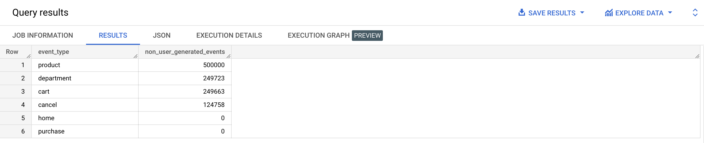
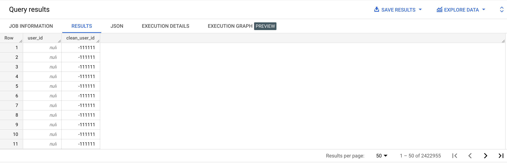

SELECT '' AS empty_string;SELECT NULL AS null_value;SELECT '' = '' empty_string_equals_empty_string;SELECT NULL = '' null_equals_empty_string;SELECT NULL = NULL null_equals_empty_string;
SELECT COUNT(*) AS event_count,
COUNT(user_id) AS user_id_count
FROM bigquery-public-data.thelook_ecommerce.events;
SELECT *
FROM bigquery-public-data.thelook_ecommerce.events
WHERE user_id IS NULL;
SELECT *
FROM bigquery-public-data.thelook_ecommerce.events
WHERE user_id IS NOT NULL;
SELECT NULLIF('morning', 'morning');
SELECT user_id,
COALESCE(user_id, 0)
FROM bigquery-public-data.thelook_ecommerce.events
WHERE user_id IS NULL;
{% include practice_problems_intructions.html %}
bigquery-public-data.thelook_ecommerce.events

SELECT event_type,
COUNT(CASE WHEN user_id IS NULL THEN 1 END) AS non_user_generated_events
FROM bigquery-public-data.thelook_ecommerce.events
GROUP BY event_type
ORDER BY non_user_generated_events DESC;
bigquery-public-data.thelook_ecommerce.events

SELECT user_id,
COALESCE(user_id, -111111) AS clean_user_id
FROM bigquery-public-data.thelook_ecommerce.events
ORDER BY clean_user_id ASC;